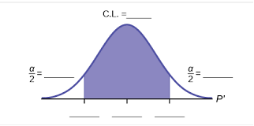

Unit 3 Normal Distributions and Confidence Intervals
6.2 Confidence Intervals for the Mean
Constructing a Confidence Interval for a Population Mean
When constructing a confidence interval, use data from a sample to estimate the mean of the population. We will use a student-t distribution for our confidence intervals because we do not know the standard deviation of the population. If we knew the standard deviation of the population, we would use a standard z score distribution instead.
Given the mean of the sample, \(\overline{x}\)
Estimate the mean for the population, \(\mu\)
Variables/Symbols used in Confidence Interval Calculations
| Population Mean | \(\mu \) | An unknown. The actual mean for the entire population. |
| Sample Mean | \( \overline{x} \) | Known. Your measured mean for your sample. |
| Best Point Estimate | \( \overline{x} \) | The value you use to approximate the population mean. |
| Alpha | \(\alpha\) | The total area in the two tails beyond the critical values. |
| Critical Values | \(t _\frac{\alpha}{2}\) | The lower/upper cutoffs for usual values on the student t curve. |
| Margin of Error | E | Padding you will use on either side of \( \overline{x} \) when you build your interval. |
| Most Common Confidence Intervals |
Corresponding Value of Alpha |
Corresponding Critical Value |
|---|---|---|
| 90% | \( \alpha \) = 0.10 | \( t_\frac{\alpha}{2}\) depends on n |
| 95% | \( \alpha \) = 0.05 | \( t_\frac{\alpha}{2}\) depends on n |
| 99% | \( \alpha \) = 0.01 | \( t_\frac{\alpha}{2}\) depends on n |
| Any other CL | \( \alpha = 1 - \frac{CL}{100} \) | \( t_\frac{\alpha}{2}\) depends on n |

Overview of Estimating an Interval for a Population Mean
Requirements:
- Random Sample
- Normally Distributed Population or \( (n \gt 30 \)
Margin of Error:
\(E=t_{\alpha / 2} * \frac{s}{\sqrt{n}}\) \( d f=n-1\)
Confidence Interval
\( \overline{x} \) = sample MEAN \(\mu\) = population MEAN
\(\overline{x}-\mathrm{E} \lt \mu \lt \overline{x}+\mathrm{E}\)
\((\overline{x}-E, \overline{x}+E)\)
\(\overline{x} \pm E\)
Minimum Sample Size:
To Estimate Population Mean:
- Are The Requirements Met To Use The \( t_\frac{\alpha}{2}\) Distribution? If Yes, Find \( t_\frac{\alpha}{2}\).
- 95%: n=23; σ is unknown; population appears to be normally distributed
Yes. Population is normally distributed.
Area to right: \( \frac{\alpha}{2}\) Degrees of Freedom: \(\begin{equation} d f=n-1=23-1=22 \end{equation}\)
Critical Value: \(\begin{equation} t_{\alpha / 2}=t_{0.025(22)}=2.073871=2.0739 \end{equation}\)
You must use a t distribution to find your critical value. If you forget and use z, your critical value will be 1.96
- 99%: n=6; σ is unknown; population appears to be very skewed
No. Population is not normally distributed and sample size is not greater than 30.
- 90%: n=200; σ is unknown; population appears to be very skewed
Yes. Sample size is greater than 30.
Area to right: \( t_\frac{\alpha}{2} \) Degrees of Freedom: \(\begin{equation} d f=n-1=200-1=199 \end{equation}\)
Critical Value: \(\begin{equation} t_{\alpha / 2}=t_{0.05(199)}=1.6525 \end{equation} \)
Note: If you forget and use z, your critical value will be 1.645
- 99%: n=25; σ is unknown; population appears to be normally distributed
Yes. Population is normally distributed.
Area to the right: \(\begin{equation} \alpha / 2=0.005 \end{equation}\) Degrees of Freedom: \(\begin{equation} d f=n-1=25-1=24 \end{equation}\)
\(\begin{equation} t_{\alpha / 2}=t_{0.005(24)}=2.7969 \end{equation}\)
Note: If you forget and use z, your critical value will be 2.576
- 95%: n=12; σ is unknown; population appears to be normally distributed
Yes. Population is normally distributed.
Area to the right: \(\begin{equation} \alpha / 2=0.025 \end{equation}\) Degrees of Freedom: \(\begin{equation} d f=n-1=12-1=11 \end{equation}\)
\(\begin{equation} t_{\alpha / 2}=t_{0.025(11)}=2.2010 \end{equation}\)
Note: If you forget and use z, your critical value will be 1.96
Constructing a Confidence Interval
- 95%: n=23; σ is unknown; population appears to be normally distributed
- Randomly selected statistics students participated in an experiment to test their ability to determine when 1 minute (or 60 seconds) passed. Forty students yielded a sample mean of 58.3 seconds and a sample standard deviation of 8.4 sec.
- Find the best point estimate of the mean time for all statistic students.
\( \overline{x} \) is your best estimate about \(\mu \)
This is your best starting point in making the confidence interval.
Best guess about \(\begin{equation} \mu : \overline{x}=58.3 \end{equation}\) seconds
- At a 95% confidence level, what is the critical value?
Critical value is \(t_\frac{\alpha}{2}\)
Area to right .025
degrees of freedom 39
\(\begin{equation} t_{025(39)}=2.0227 \end{equation}\)
- Construct a 95% confidence interval estimate of the population mean of all statistic students.
Calculate the Margin of Error
\(\begin{equation} E=t_{\alpha / 2}\left(\frac{s}{\sqrt{n}}\right)=2.0227\left(\frac{8.4}{\sqrt{40}}\right)=2.6864 \text{ sec} \approx 2.7 \text{ sec} \end{equation}\)
Construct the Confidence Interval: Apply the margin of error to the best point estimate to create the interval.
\(\begin{equation} 58.3 \pm 2.7 \end{equation}\)
\(\text{Min}=\overline{x}+\mathrm{E}=58.3-2.7=55.6 \text{ seconds}\)
\(\text{Max}=\overline{x}+\mathrm{E}=58.3+2.7=61\)
\((55.6,61)\)
\(55.6 \lt \mu<61\)
Based on the results, is it likely that their estimates have a mean that is reasonably close to 60 seconds?
Yes. We are 95% confident the mean time is between 55.6 seconds and 61 seconds. 60 is in the interval.
- Find the best point estimate of the mean time for all statistic students.
- The braking distance (dry pavement, 60mph) for a simple random sample of 32 Model X cars has a mean of 137 feet and sample standard deviation of 5 ft.
- Find the best point estimate of the mean braking distance for all Model X cars.
\( \overline{x} \) is your best estimate about \( \mu \)
This is your best starting point in making the confidence interval.
Best guess about \(\mu : \overline{x}=137\) feet
- At a 99% confidence level, what is the critical value?
Critical value is \( t_\frac{\alpha}{2} \)
Area to right .005
degrees of freedom 31
\(t_{005(31)}=2.7440\)
- Construct a 99% confidence interval estimate of the population mean braking distance for all Model X cars.
Calculate the Margin of Error
\(E=t_{\alpha / 2}\left(\frac{s}{\sqrt{n}}\right)=2.7440\left(\frac{5}{\sqrt{32}}\right)=2.42537 \text { feet } \approx 2.4\) feet
Construct the Confidence Interval: Apply the margin of error to the best point estimate to create the interval.
\(137 \pm 2.4\)
\(\mathrm{Min}=\overline{x}+\mathrm{E}=137-2.4=134.6 \text{ feet}\)
\(\mathrm{Max}=\overline{x}+\mathrm{E}=137+2.4=139.4\) feet
\((134.6,139.4)\)
\(134.6 \text { feet } \lt \mu \lt 139.4\) feet
- Find the best point estimate of the mean braking distance for all Model X cars.
- A random sample of fifteen 8th grade band students yielded the following heights (in inches):
66.4 59.6 59.8 67.9 64.8 66.7 64.7 63.4 62.6 58.6 67.6 62.7 63.2 65.0 61.8 - Use technology to calculate the mean and standard deviation for this sample.
\(\bullet\) \(\overline{x} = \)
63.65 in. Round each to the 2nd decimal place. \( \bullet \) s =
2.89 in. \( \bullet \) Best Point Estimate for the Population Mean:
63.65 in. The best estimate for the population mean is the sample mean.
- Construct (using the formula) the 95% confidence interval for the mean height of all 8th grade band students. Assume the heights of 12-14 year old students are normally distributed. Draw and label a bell curve to illustrate your work.
\( \bullet \) Critical Values:
\(t_{\alpha / 2}=t_{0.025(14)}=2.1448\) \( \bullet \) Margin of Error:
\(E=t_{\alpha / 2}\left(\frac{s}{\sqrt{n}}\right)=2.1448\left(\frac{2.89}{\sqrt{15}}\right)=1.6004 \text{ in.} \approx 1.60 \text{ in.}\) \(63.65 \pm 1.60\)
\(\mathrm{Min}=\overline{x}-E=63.65-1.60=62.05\) in.
\(\mathrm{Max}=\overline{x}+E=63.65+1.60=65.25\) in.
\((62.05,65.25)\)
\(62.05 \lt \mu \lt 65.25\)
 - Use technology to confirm the Confidence interval:
\((62.05,65.25)\) - Based upon this confidence interval, does it appear as though the mean height of 8th grade band students could be 63.6 inches? Explain why or why not.
Yes. We are 95% confident the population mean height is between 62.05 inches and 65.25 inches. 63.6 inches is in that interval.
- Use technology to calculate the mean and standard deviation for this sample.
- We want to estimate the mean weight loss of people one year after using the Atkins weight loss program. How many people on that program must be surveyed if we want to be 95% confident that the sample mean is within 0.25 lbs of the true population mean? Assume that the population standard deviation is known to be 10.6 lb.
Use the formula to evaluate the minimum sample size .
\(n=\left[\frac{z_{\alpha / 2} \sigma}{E}\right]^{2} = \)
\(\left[\frac{(1.96)(10.6)}{0.25}\right]^{2}=6906.27\) always round up n =
6907 people Confirm with technology
- We want to estimate the mean weight loss of people one year after using the Atkins weight loss program. How many people on that program must be surveyed if we want to be 90% confident that the sample mean is within 0.5 lbs of the true population mean? Assume that the population standard deviation is known to be 10.6 lb.
Use the formula to evaluate the minimum sample size .
\(n=\left[\frac{z_{\alpha / 2} \sigma}{E}\right]^{2}=\)
\(\left[\frac{(1.644852)(10.6)}{0.5}\right]^{2}=1215.977\) n =
1216 people Confirm with technology